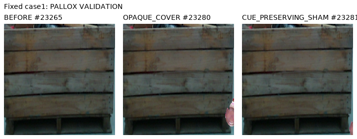

10/12 기준 통과 · 불채택. 공개 실사에 추가한 가림은 56/119→94/119로 늘었지만, 보임도 일부 더 틀렸다. 자연 가림 2점은 모두 놓쳤다. 현재 223장에 새 추론은 하지 않았다.
ImageNet ResNet18을 동결하고 초기 대상 영역과 키포인트 중심 crop의 특징·유사도를 읽는 65,857개 파라미터 분류기만 학습했다. q/L과 대상 박스는 그대로이며 좌표 예측·보정·PnP는 없다. 선택은 source VAL에서 step200/2000이다.
| 대상 | D 재현율 | E 재현율 | D 정밀도 | E 정밀도 | 보류율 |
|---|---|---|---|---|---|
| 공개 실사 기반 AUX | 133/152 (87.5%) | 94/121 (77.7%) | 83.1% | 83.2% | 0.0% |
| 합성 AUX | 197/209 (94.3%) | 33/34 (97.1%) | 99.5% | 73.3% | 0.0% |
공개 E94/121은 자연 E0/2 + 합성 가림94/119다. 표는 조건부 AUX 평가이며 현재 평가셋 성능이나 human/native 정답 평가가 아니다.
| 모델 | 공개 가림 | 공개 sham 보임 | 공개 3상태 모두 정답 | 합성 3상태 모두 정답 |
|---|---|---|---|---|
| C8 local RGB | 56/119 | 108/119 | 46/119 | 30/32 |
| C9 target-relative | 94/119 | 102/119 | 78/119 | 27/32 |
추가 문맥과 유사도 특징을 함께 바꾼 결과다. 특정 원인 하나의 효과로 단정하지 않는다. 두 모델 모두 사전에 정한 모든 기준을 충족하지 못했다.
앞면 중심의 초기 박스다. 가림 물체는 오른쪽 경계에서 일부만 보인다. 같은 박스를 before/cover/sham에 유지했다.

검증 2점은 같은 공개 사진 속 서로 다른 부위다. 원본 before/after를 다시 확인했을 때 지정 목재 접합부를 별도 골판지 상자가 덮는다는 정성 근거는 있었다. 미세 정합·native 대응·사람 visibility gold는 확정되지 않았다. 이 한계를 이유로 라벨이나 실패 기준을 바꾸지는 않았다.
고정 3쌍·4점 실제 before/after 시트 · 저장 결과 대조
Source VAL은 반복 개발에 노출됐다. 자기 가림 S는 외부 가림 학습에서 제외한다. 현재 223장은 학습·정규화·문턱·checkpoint·모델 선택에 사용하지 않았으며, 이번 단계의 새 current 추론은 0회다.